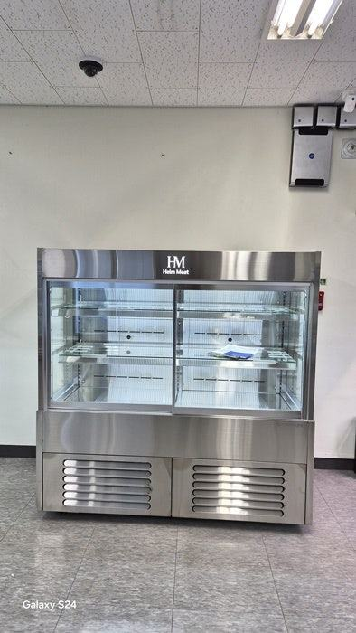

정육쇼케이스
정육쇼케이스 수명을 줄이는 습관과 늘리는 관리

정육쇼케이스 수명을 가장 많이 줄이는 건 기계실 열이 빠지지 못하는 설치, 핏물과 기름때가 쌓인 배수·응축기, 문을 열어 둔 채 하는 작업입니다. 이 세 가지를 관리하고 이상 신호가 보일 때 바로 점검받으면 같은 제품도 훨씬 오래 씁니다.
안녕하세요. 정육점 쇼케이스를 오랫동안 맞춤으로 제작해 온 한성쇼케이스입니다.
정육점 사장님들께 "쇼케이스 보통 몇 년 써요?"라는 질문을 자주 받습니다. 솔직히 답은 매장마다 다릅니다.
같은 시기에 들어간 제품도 한 매장은 멀쩡하고 다른 매장은 몇 번씩 수리를 받는 경우가 있거든요.
그 차이는 대부분 쓰는 환경과 습관에서 나옵니다. 정육쇼케이스는 24시간 쉬지 않고 도는 데다, 고기 손질 작업과 붙어 있어 핏물, 기름, 물청소에 늘 노출됩니다.
오늘은 정육쇼케이스 수명을 줄이는 습관과, 매일·정기적으로 해 두면 수명을 늘릴 수 있는 관리 방법을 정리해 드리겠습니다.
1. 기계실이 숨을 못 쉬는 설치
쇼케이스 수명은 콤프레셔가 정합니다. 기계실 앞이나 뒤가 막혀 열이 빠지지 못하면 콤프레셔는 같은 온도를 맞추려고 훨씬 오래 돌고, 그만큼 빨리 지칩니다.
정육점은 쇼케이스 아래나 옆에 박스, 랩, 트레이를 쌓아 두는 경우가 많아 흡입구가 쉽게 막힙니다.
기계실 그릴 앞은 늘 비워 두고, 벽과의 간격을 지켜 주세요. 여름에 뒤쪽 작업실 온도가 크게 올라간다면 환기도 함께 신경 써야 합니다.
- 기계실 그릴 앞에 물건을 쌓지 마세요.
- 작업실 환기 상태를 여름 전에 점검하세요.
2. 핏물과 기름때, 물청소
진열 트레이에서 흘러내린 핏물이 배수구에 굳으면 물이 고이고 냄새가 나며, 내부 부식으로 이어질 수 있습니다.
마감 때 트레이를 빼서 닦고 배수구를 확인하는 습관이 필요합니다.
정육점 바닥을 물청소할 때 쇼케이스 하부 기계실 쪽으로 물을 세게 뿌리는 건 피해 주세요. 전기 부품과 팬 모터에 물이 닿으면 고장의 원인이 됩니다.
응축기에 쌓인 기름 섞인 먼지도 정기적으로 털어 주셔야 합니다.


3. 문 열어 둔 채 하는 작업
손님이 부위를 고르는 동안, 혹은 고기를 채우는 동안 뒷문을 열어 둔 채 두는 습관은 콤프레셔를 쉬지 못하게 합니다.
한 번 빠진 냉기를 다시 채우느라 기계가 오래 돌고, 유리에 김이 서려 고기도 잘 보이지 않습니다.
필요한 만큼 꺼내고 바로 닫는 동선을 만들어 두세요. 문 패킹이 갈라지거나 들뜬 곳이 있다면 문을 닫아도 냉기가 새니 교체를 요청하시는 것이 좋습니다.
- 고기 채울 때 한 번에 옮기고 문을 닫으세요.
- 패킹을 손으로 눌러 들뜬 곳이 없는지 보세요.
4. 이상 신호가 보일 때
콤프레셔 소리가 평소보다 크거나 끊겼다 이어지기를 반복할 때, 설정 온도까지 내려가는 시간이 길어졌을 때, 고기 색이 전보다 빨리 변할 때는 작은 고장의 신호일 수 있습니다.
이 단계에서 점검을 받으면 큰 수리로 번지는 걸 막을 수 있습니다.
설정 온도를 더 낮춰서 버티는 건 콤프레셔 부담만 키웁니다. 이상이 느껴지면 온도와 증상을 기록해 두고 A/S를 요청하세요.
평소에 확인 습관을 들여 두면 이상을 더 빨리 알아챕니다. 아침에 고기를 채우기 전 표시 온도를 한 번 보고, 마감 때 기계실 쪽 소리를 한 번 들어 보는 것만으로 충분합니다.
매일 같은 시간에 같은 것을 보면 평소와 다른 점이 눈에 들어오고, 그 작은 차이가 큰 고장을 막는 출발점이 됩니다.
체크리스트
- 기계실 그릴 앞 비우기와 벽 간격
- 트레이·배수구 핏물 매일 청소
- 물청소 시 기계실 쪽 물 피하기
- 응축기 기름 먼지 정기 청소
- 문 패킹 상태와 문 여닫는 습관
현장에서 자주 보는 경우: 고장 없는 제품보다 사후 관리가 중요할 때
정육점쇼케이스는 멈추면 그날 고기를 버려야 하는 장비라, 상담 오시는 사장님들은 대부분 고장이 안 나는 제품을 찾으십니다.
하지만 전기로 도는 제품인 이상 고장 가능성을 아예 없앨 수는 없습니다. 그래서 제품을 고를 때 사후 서비스가 가능한지도 함께 따져 보시라고 말씀드립니다.
이런 매장은 매장 내부 구조를 최대한 살리면서 쇼케이스 본연의 기능을 지키도록 맞춤으로 제작했습니다.
고기가 싱싱해 보이는 진열과 함께, 설치 이후에도 A/S를 받을 수 있는 체계를 갖춰 오래 쓰실 수 있도록 했습니다.



자주 묻는 질문
정육쇼케이스는 몇 년 정도 쓰나요?
설치 환경과 관리 습관에 따라 차이가 커서 한 가지로 말씀드리기 어렵습니다. 기계실 통풍과 청소, 문 여닫는 습관을 지키면 같은 제품도 훨씬 오래 쓰실 수 있습니다.
응축기 청소는 얼마나 자주 해야 하나요?
작업실 먼지와 기름 정도에 따라 다릅니다. 그릴에 먼지가 눈에 보이기 시작하면 전원을 끄고 털어 주시고, 기름때가 굳었다면 점검 때 함께 요청하세요.
이상 소리가 나면 어디로 연락하나요?
대표전화 031-986-2458로 증상을 말씀해 주세요. 한성쇼케이스는 전국 240여 개 A/S 센터를 운영하고 있어 가까운 곳에서 대응합니다.
매장 조건에 맞춰 만드는 한성쇼케이스
원하시는 제품 사진과 설치할 공간 사진만 보내 주셔도 매장에 맞는 구성을 추천해 드립니다.
- 전국 240여 개 A/S 전담 센터 운영
- 본사 대량 자재 매입으로 품질 대비 합리적인 가격
- 유럽제·삼성 냉각 콤프레셔 적용
- 국내 최초 쇼케이스 전문 디자이너 상주
매장 폭과 원하는 진열 구성을 알려 주세요. 실측과 견적을 안내해 드립니다.
031-986-2458